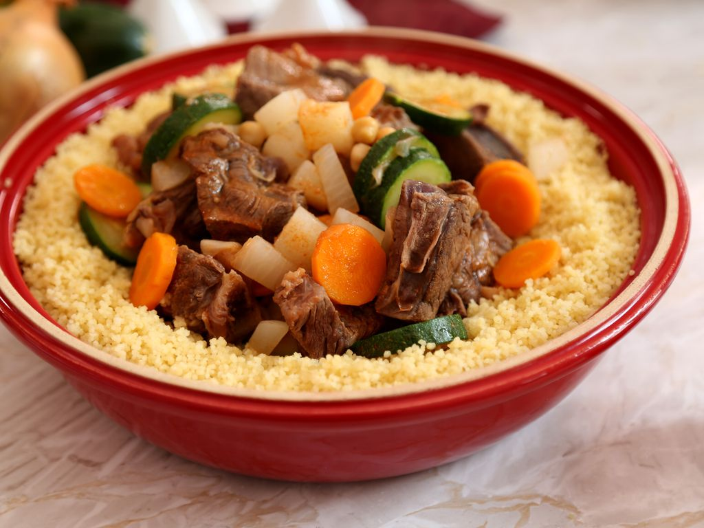

Resultats :
1- Un restaurant Oriental : Le couscousier

6 rue de la juiverie, 44000 Nantes Numéro de téléphone : 02 40 89 41 56
2- Un hotel : l'Hotel Saint-Patrick
7 rue Saint Nicolas, 44000 Nantes Numéro de téléphone pour une réservation : 02 40 89 41 56
3- Un monument à visiter : Le chateau des Ducs de Bretagne

Centre-ville
4- Un moyen de transport : la marche
Suivez la ligne verte au sol